构建查询
查询会在你的文档中查找满足你所给条件的元素，并以列表或数字的形式显示出来。这些元素可以是词、短语、句子、编码片段、备忘录、话轮、文档，也可以是编码本身。查询通常源于你对文档本身提出的问题。例如，在“气候辩论”项目中，你可能想知道，在行动派的文档里，编码为“紧迫性”的片段中有哪些句子含有危机或期限。你也可能想知道哪些文档目前还没有“成本”编码实例，或者哪些词出现在“情绪”编码实例前后五个词以内。构建查询时，你会用到若干个条件，问题的每一部分对应一个，结果显示在条件下方。
查询用于回答涉及多个条件的问题，例如同时涉及词、编码和属性的问题。如果只想探究单个词的用法，可以考虑改用词汇速写（见第 12 章“词汇速写”）。
关于如何解读查询的输出以及其中用到的统计方法，详见第 16 章“查询结果与统计”。语法查询和从所选内容查询的更多信息见第 17 章“查询模式与发现”。基于查询创建透镜、分析器或文档集，见第 18 章“使用查询结果”。
关键术语
以下术语适用于介绍查询的全部四章。
- 范围指查询的是资料库的哪一部分。范围可以是一个文档、一个文档集、一个项目或所有项目。
- 单位指查询要查找的对象，可在查找条件中选择；查询找到的每一项都称为一个命中。
- 规则指施加在命中的某一属性上的检验，例如词元 是 气候，或立场 是以下任一 “行动派”。
- 字段指规则所作用的属性。词的词元、句子的编号、编码实例的编码以及文档的属性都是字段。
- 词元指词的词典形式（例如英文 warned 和 warns → warn），它把一个词的各种词形归在一起（见第 11 章“语法检查器”）。
- 条件组指用全部、任一或无连接起来的一组规则。
- 上下文行与普通规则类似，区别在于它作用于命中之外，检验周围的单位，例如命中是否与编码为“紧迫性”的片段重叠。
- “具有”行统计属于命中的某种内容，例如统计某个文档上有多少个编码实例。
- 类别指分配给某些命中的标签和颜色。类别主要在透镜中发挥作用。
- 模板指预先设好的查询，载入后再按需要修改。
- 已存储的查询指以特定名称存储的查询，可在某个文档、文档集或项目中使用，也可在整个 LemmaLoom 中使用。
查询的存放位置
查询可以在三个位置构建，三处使用同一个构建器；用哪一处，主要取决于你想查询哪些文档。阅读文档时，检查器会在文本旁边保留一个查询。要在文档集或整个项目的多个文档中查询，请使用它的查询视图；要同时查询多个项目，可以使用查询窗口。
| 位置 | 打开方式 | 范围 |
|---|---|---|
| 检查器中的查询分面 | 文档检查器的多重模式标签页，然后点按查询 | 该文档 |
| 查询视图 | 导航栏中项目下的查询，或文档集标签页顶部的查询 | 该项目或该文档集 |
| 窗口 ▸ 查询 | 窗口菜单 | 所有项目、一个项目或其中的一个文档集 |
在 LemmaLoom 退出之前，查询会一直保留在创建它的地方。如果你在“行动派”文档集中开始构建一个查询，然后转去阅读“时间不多了”，这个未完成的查询仍留在那个文档集中。“时间不多了”的查询分面也保留着它自己的查询。同样，文档查询分面中未存储的查询，在关闭文档后可能会丢失。因此，凡是想保留的查询，都需要存储起来（见存储查询）。
在文档中
查询分面针对你正在阅读的文档内容提问，并把答案放在文本旁边。下图展示的是“时间不多了”，其中载入了“气候辩论”的已存储查询之一“紧迫性话题”。
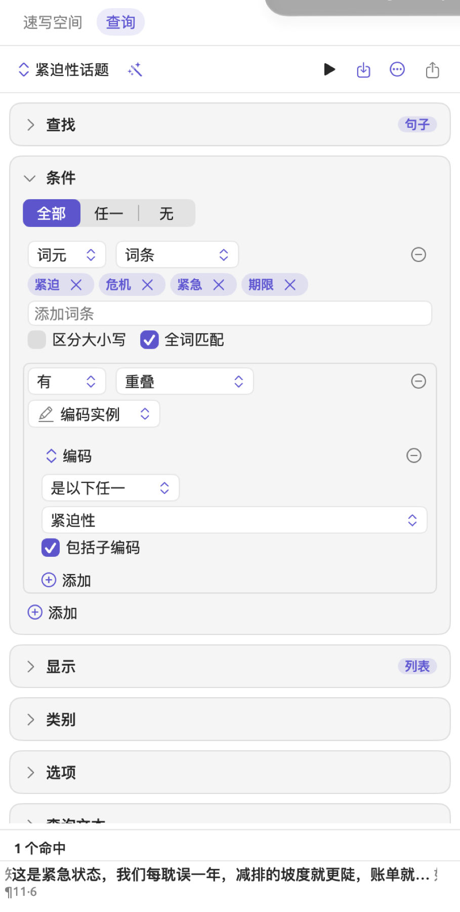
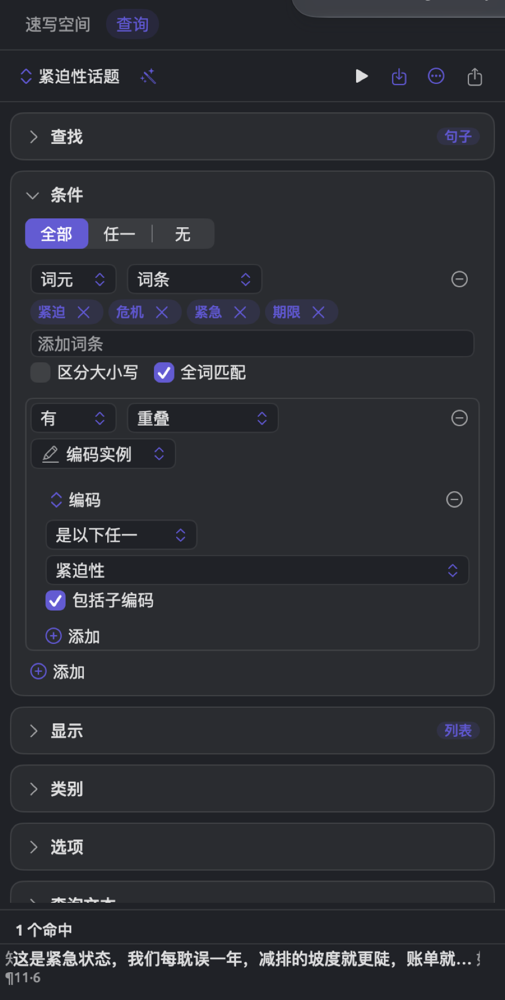
打开查询分面：
- 打开文档。
- 选取显示 ▸ 检查器 ▸ 多重模式（⌥⌘4）。检查器随即出现，并选中多重模式标签页。
- 点按标签页顶部的查询。
检查器的宽度只容许一次展开一个条件。点按一个条件以显示其内容时，原先展开的条件会收起。开始时，条件已经展开。条件下方的区域显示查询结果。构建器与结果区域之间的分隔线可以移动。点按一个命中，阅读器会滚动到该命中所在的片段。
查询所在文档的文本、索引或编码实例一旦发生变化，该查询就会自动重新运行。
在文档集或项目中
打开文档集的查询视图：
- 在导航栏的文档集下点按该文档集。文档集会在单独的标签页中打开。
- 在标签页顶部的一排按钮中点按查询。窗口较窄时，这排按钮会变成一个菜单，请从中选取查询。
点按导航栏中项目下的查询，可以打开整个项目的查询视图。与文档集一样，导航栏中的标签也会在自己的标签页中打开，这个标签页同样带有查询视图。
这个视图给构建器留出了充足的空间。最顶部是一条横栏，其中有已存储查询的菜单、一个查询搜索栏，以及运行查询和存储按钮（见下文的构建器）。横栏下方，左侧是一个窄栏，先列出你的已存储查询，然后是模板；构建器占据其余全部空间。结果位于所有这些内容的正下方，占满整个宽度；拖动两者之间的分隔线，可以调整各部分所占的空间。查找、条件和显示这几个条件在载入时是展开的；如果模式条件可见，这个条件一开始也是展开的。每个条件都可以单独展开和收起。连按结果中的一个命中，文档会在预览标签页中打开，并直接滚动到该片段。
如果查询需要更多空间，或者你想让它在阅读器旁边保持打开，请点按横栏右端带两个斜向箭头的按钮在窗口中打开。也可以右键点按标签页本身，然后点按在新窗口中打开。查询窗口随即出现，其中是当前查询的一份副本，包括你尚未存储的更改。文档集或项目保留它自己的那一份。
查询窗口
查询窗口用于跨越所有项目的查询，也用于让项目或文档集的查询与阅读器同时打开。选取窗口 ▸ 查询可以打开查询窗口；如果它已经打开，则会被移到最前面。查询窗口的界面与查询视图完全相同，只是横栏左端有一个范围菜单。这个菜单提供所有项目、按名称列出的各个项目，以及当前项目中的文档集，显示为“气候辩论 › 行动派”这样的形式。第一次打开窗口时，所选范围是所有项目，构建器中是一个空查询。选择其他范围时，当前查询仍留在构建器中，但改为分析所选范围中的文档。
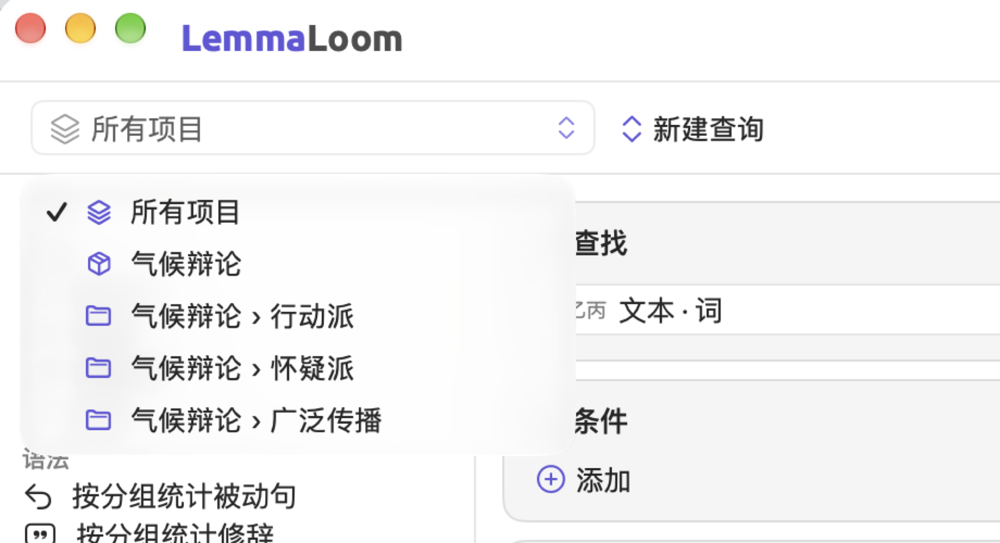
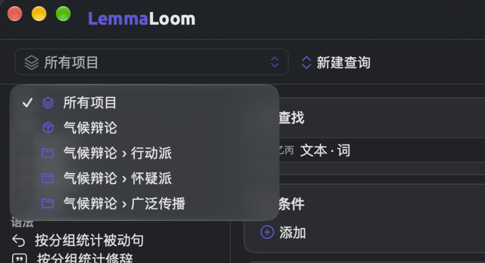
只有当所选范围是所有项目时，才能引用文档的项目字段，或按项目对结果分组。关于跨项目功能的更多信息，见第 3 章“项目与文档”中的跨项目工作。
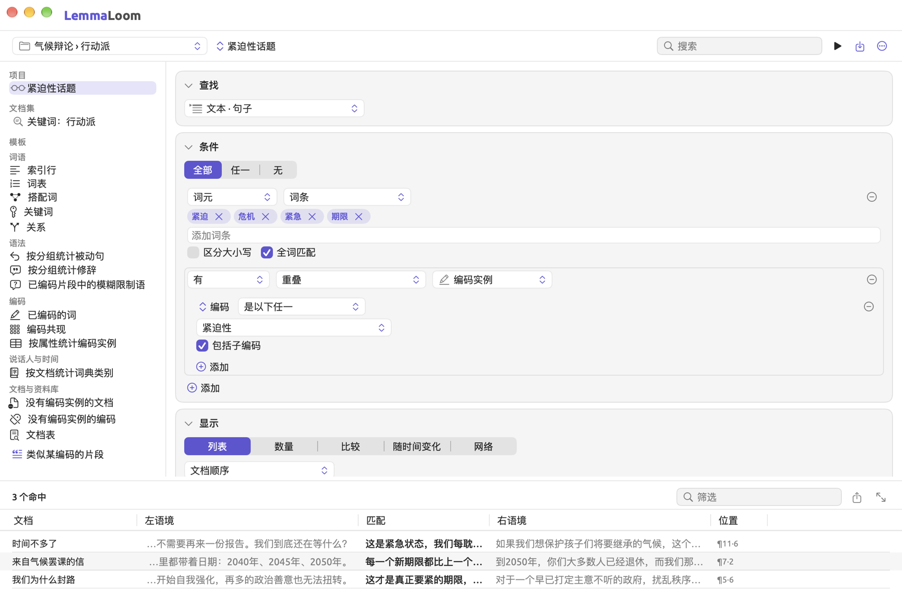
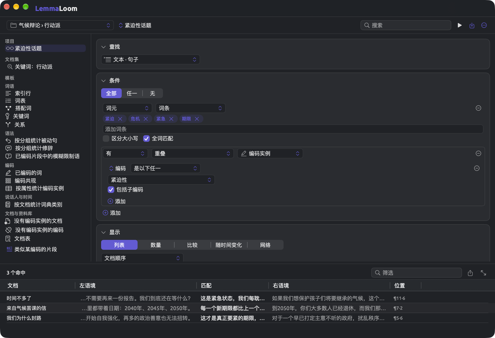
要同时处理两个查询，例如一个查询和它的变体，可以在查询窗口的操作菜单中选取新建窗口。操作是每个查询窗口横栏中一个带圆圈的省略号按钮。新窗口以同一范围中的一个新查询开始。这种窗口中当前显示的查询，如果事先没有存储，关闭窗口时就会丢失。
范围
范围还决定构建器提供哪些选项。例如，与文档属性有关的规则会在查询读取多个文档时出现。
| 文档 | 文档集 | 项目 | 所有项目 | |
|---|---|---|---|---|
| 读取的文档 | 该文档 | 文档集中的原文文档 | 项目中的原文文档 | 每个项目的原文文档 |
| 规则中的文档字段 | 否 | 是 | 是 | 是 |
| 文档集字段 | 否 | 是 | 是 | 否 |
| 项目字段 | 否 | 否 | 否 | 是 |
| 资料库单位 | 编码、标签和词典词条 | 除项目外的全部 | 除项目外的全部 | 全部 |
| “显示”条件中的比较 | 否 | 是 | 是 | 是 |
| “显示”条件中的关键词 | 否 | 是 | 是，与它的某个文档集比较 | 否 |
| 语料选项 | 否 | 是 | 是 | 是 |
资料库单位查找的是条目，这些条目可以是编码或文档，但绝不会是片段（见选择要查找的内容）。
查询文档时，不论它是原文还是译文，LemmaLoom 都会读取它。文档集和项目只针对原文进行查询；要查询译文，请更改选项条件中显示原文的菜单（见选项）。“广泛传播”这样的智能文档集可以作为范围，每次运行查询时，都会重新查找这个智能文档集的成员。
第一个查询
在这个例子中，你将重新构建示例项目自带的查询“紧迫性话题”。这个查询在由行动派文章组成的文档集中，查找含有紧迫、危机、紧急或期限，并且与编码为“紧迫性”的片段重叠的句子。重新构建出你自己的版本后，你会把它单独存储，以便之后进行比较。
- 在导航栏的文档集下点按“行动派”，然后点按文档集标签页顶部的查询。
- 在查找条件中选取文本 · 句子。
- 在条件中点按添加，然后选取添加文本。这时会出现一个文本行，设为词和词条。
- 把词改为词元，让同一个词的各种词形都计算在内，例如英文中 deadlines 这样的复数形式。
- 点按添加词条，输入
紧迫, 危机, 紧急, 期限，然后按下 Return 键。每个词条都会单独列出。 - 再次点按添加，然后选取添加上下文。保持这一行的有、重叠和编码实例不变。
- 点按上下文行内的添加按钮，然后选取添加规则。
- 点按规则的字段，从菜单的编码实例部分选取编码。比较方式会变为是以下任一。
- 点按显示为无的值，勾选“紧迫性”。包括子编码已经勾选，所以带“时间节点”和“临界点”的编码实例也会计算在内。
在“行动派”这样的小型文档集中操作时，结果列表会随着你的操作自动填入句子，因为在这样的小文档集中，查询每次更改后都会自动运行（见下文的运行查询）。点按查询文本，可以查看实际的查询文本：
查找 句子
条件 词元 包含 "紧迫", "危机", "紧急", "期限" 且 有 重叠 编码实例 (编码 是以下任一 "紧迫性")
显示 列表
保留你的查询：
- 打开存储菜单（一个方框和一个指向框内的箭头），选取存储为透镜…。
- 在名称中输入
紧迫性话题 2。LemmaLoom 接受已被占用的名称，但两个都叫“紧迫性话题”的查询很难区分。 - 在可用范围中选取项目，然后点按存储。
现在，你的查询与“紧迫性话题”并列，出现在项目的每个查询视图中，也出现在你所有文档的查询分面中。你还可以在阅读器的透镜菜单中把它选作透镜（见第 18 章“使用查询结果”）。要与原来的查询比较，请从横栏左侧的查询名称菜单中选取“紧迫性话题”，或者在左栏中点按它。
先在查找条件中选择所需的单位，然后在条件中逐步添加规则，同时留意每条新增规则的效果。如果某条规则让命中意外减少，请相应地修改查询。
构建器
横栏从左到右依次包括：
- 查询的名称，它同时是一个菜单，用于访问这里可用的已存储查询，新建查询位于菜单底部。名称旁边有一个圆点（例如“紧迫性话题” •），表示你对这个查询做了尚未存储的编辑；
- 搜索栏，它把左侧的已存储查询和模板列表限定为名称中含有你所输入文字的那些；
- 运行查询（三角形图标），查询运行时变为停止；
- 存储（一个方框和一个指向框内的箭头）；
- 操作（带圆圈的三个点图标），提供作用于结果的命令，例如从命中创建文档集；
- 在窗口中打开（两个斜向箭头），位于文档集或项目的查询视图中。
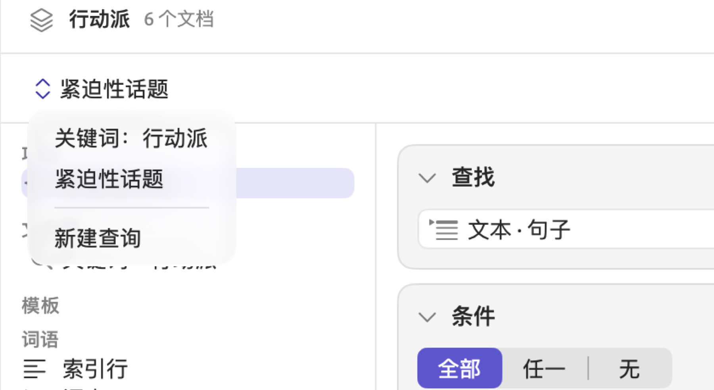
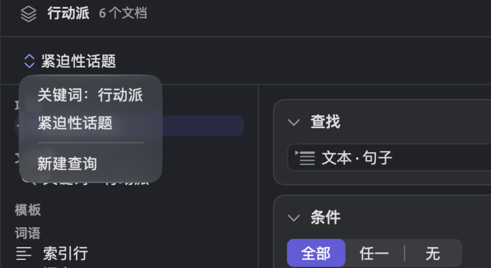
在查询窗口中，横栏左端还有一个范围菜单。窗口较窄时，运行查询、存储和操作图标会移到横栏下方的第二行。最后，有结果时，导出（带向上箭头的方框）位于结果上方的栏中（见第 16 章“查询结果与统计”中的导出结果）。
在检查器的查询分面中，横栏包括查询的名称、模板图标（魔杖）、运行查询、存储、操作和导出。根据检查器的宽度，横栏可能会分成两行。
横栏之后是以下各个条件：
| 条件 | 内容 |
|---|---|
| 查找 | 单位；对于文本匹配，还包括要查找的文本 |
| 模式 | 序列、依存或短语模式，只在模式匹配时显示 |
| 条件 | 规则、条件组、文本行、上下文行和“具有”行 |
| 显示 | 结果的呈现方式，例如列表、数量或比较 |
| 类别 | 命中的标签和颜色 |
| 选项 | 译文、已编码备忘录，以及列表保留多少个命中 |
| 查询文本 | 以文字写出的整个查询 |
条件收起时，右侧会显示摘要，例如单位、结果类型，或者规则、类别的数目（如3 条规则）。
用编辑 ▸ 从所选内容查询命令开始一个查询时，各个条件上方会出现一排根据所选词语生成的选项。关于这个命令的更多信息，见第 17 章“查询模式与发现”中的从所选内容查询。
选择要查找的内容
结果中的每一行代表一个分析单位，也就是你想阅读或统计的东西。如果要查找与话题有关的内容，句子往往最合适；如果问题与你自己的编码实例有关，则应使用编码实例。
在查找下的下拉列表中，单位按种类排列，每一项都写成种类加单位，例如文本 · 句子或标注 · 编码实例。新查询默认查找文本 · 词，并显示为列表。
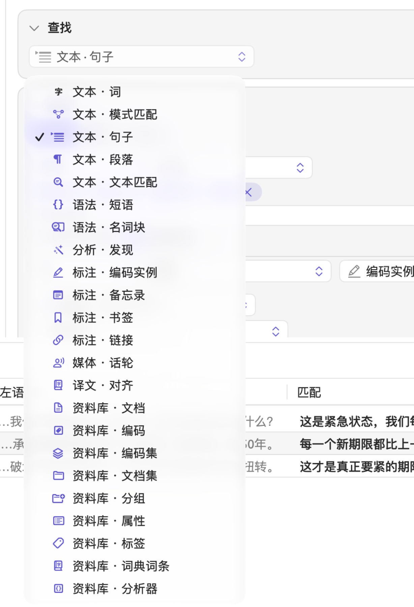
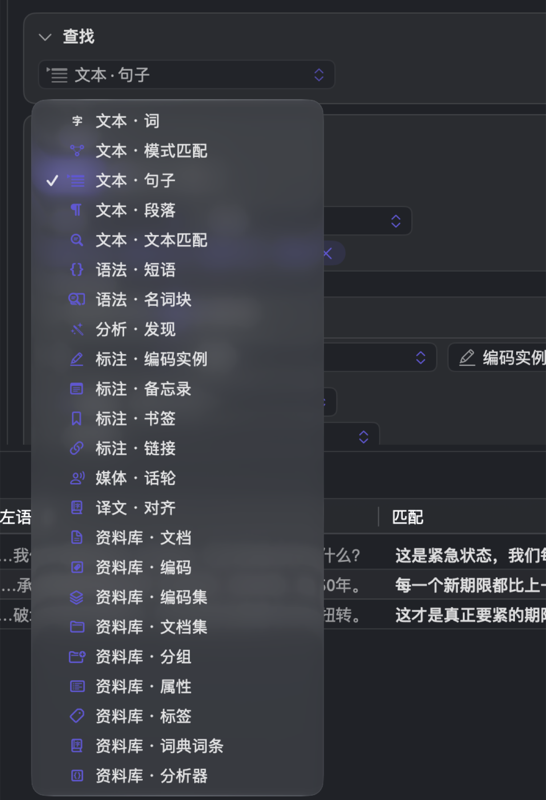
| 种类 | 单位 | 一个命中是 |
|---|---|---|
| 文本 | 词 | 一个词或一个标点符号 |
| 文本 | 模式匹配 | 与模式条件相符的一段文本 |
| 文本 | 句子 | 一个句子 |
| 文本 | 段落 | 一个段落 |
| 文本 | 文本匹配 | 查找条件中所设文本的一次出现 |
| 语法 | 短语 | 句子短语结构中的一个短语，例如名词短语或介词短语 |
| 语法 | 名词块 | 一个名词连同从属于它的词，例如气候危机 |
| 分析 | 发现 | 由衔接、元话语或修辞分析器，或由你自己的某个分析器标注的片段 |
| 标注 | 编码实例 | 一个编码片段 |
| 标注 | 备忘录 | 一条备忘录。附于整个文档的备忘录覆盖全文 |
| 标注 | 书签 | 一个书签 |
| 标注 | 链接 | 链接的一端 |
| 媒体 | 话轮 | 转写文本中的一个话轮 |
| 译文 | 对齐 | 文档中的一个语段，与它在译文中的对应语段配成一对 |
| 资料库 | 文档、编码、编码集、文档集、分组、属性、标签、词典词条、分析器、项目 | 该种类的一个条目 |
词、模式匹配、句子、短语、名词块和发现要求文档在分析之前已建立索引。尚未建立索引的文档在处理时会被略过，命中数旁边的数字（例如5 / 6）表示读取了多少个文档。其他单位不需要索引。每种语言的索引具体能提供什么，见第 21 章“分析与索引”。
资料库单位查找的是条目而不是片段。因此，它们的结果表中每个找到的条目占一行，而不是每个找到的片段占一行。文档结果显示文档的标题、作者、日期、语言、所属分组、标签和词符数。编码实例和已编码文档等编码列只统计查询范围之内的情况，并且只统计带该编码本身的编码实例。以“行动派”文档集为例，这些编码列只统计行动派文章中的编码实例。
切换单位时，所有不兼容的规则都会被移除，不兼容的分组依据键也一样。排序恢复为文档顺序；同样，如果显示条件原先设置的结果在切换后不再可用，它会恢复为列表。上下文行、文本行以及“具有”行会保留下来，需要检查它们是否与当前单位兼容。“具有”行只与“具有”下列出的单位兼容。同样，上下文行只适用于片段单位和文档。旧单位遗留下来的行会使结果变空，所以请把它移除。
“模式”条件
选择模式匹配单位后，界面中查找条件下方会出现模式条件。模式按语法描述一段文本，因此适用于查询某种结构，例如动词与宾语的搭配，而不论其中具体是哪些词。模式条件支持三种类型，即序列（一串词，词与词之间可以有间隔）、依存（由语法依存关系连接的词）和短语（某一特定类型的短语）。关于模式的更多信息，见第 17 章“查询模式与发现”。
“条件”中的规则
命中的标准由条件中各行来定义。条件一开始是空的，范围中的所有内容都算作命中；因此，针对句子的空查询会把所有句子都当作命中。
条件的底部是添加菜单，可以添加五种行：
- 添加规则添加针对一个字段的规则。
- 添加条件组添加由若干行组成的子组（见下文的条件组）。
- 添加文本添加针对文本内容的查找条件（见匹配文本）。
- 添加上下文添加基于上下文的条件，即基于命中周围其他单位的条件（见上下文）；只有代表文本片段的单位才提供这一项。
- 添加“具有”条件添加基于与命中相关联的条目的条件（见“具有”）；只有文档、编码、编码集、文档集、分组、标签和项目才提供这一项。
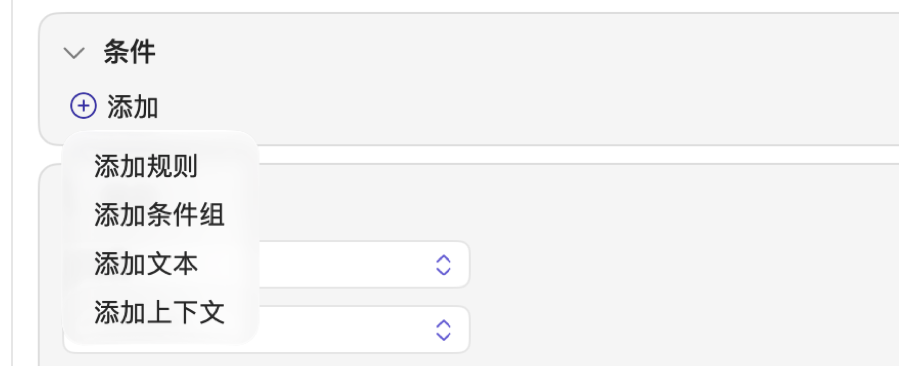
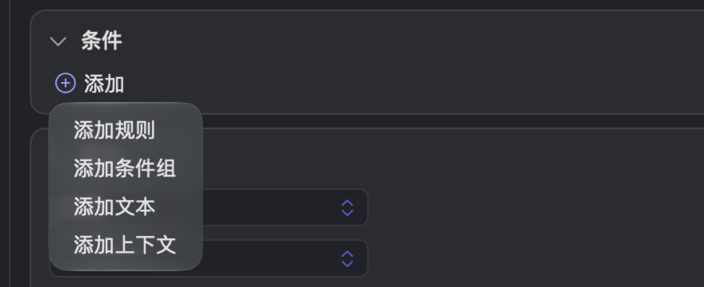
点按某一行旁边的减号按钮，可以把它从条件中删除。
添加规则
在“气候辩论”项目中，“立场”和“读者数”都是每个文档的属性。在项目中构建资料库 · 文档查询，并对这两个属性都设置规则，就可以只提取读者众多的行动派文档。这个查询找到两个文档，即“时间不多了”和“来自气候罢课的信”。查询文本如下：
查找 文档
条件 "立场" 是以下任一 "行动派" 且 "读者数" 至少为 100000
显示 列表
添加规则：
- 在条件中点按添加，然后选取添加规则。这时会出现一条已选好字段的规则；由于还没有值，它带有红色轮廓。
- 点按字段，选取要检验的属性，例如属性 ▸ 立场。
- 选取一种比较方式，例如是以下任一或至少为。
- 在值中输入值，或者点按值，勾选应当计入的那些。
有不止一行时，条件顶部会出现一个控件，提供全部、任一和无三个选项。设为全部时（如上例中的查询），文档必须满足两条规则。值为空的规则（例如值栏为空的读者数 至少为）在填入值之前不予考虑。
字段
字段菜单按部分列出与当前单位相关的字段。当前单位的字段排在最前，其后是包含它的各个更高层级单位的字段。如果单位是词，这五个部分依次为词、句子、段落、片段和文档。使用当前单位所在部分以外的字段时，字段名称前会加上所在部分的名称，例如在词中查找时显示为句子 · 被动。
有三项会打开另一个菜单。属性列出当前项目中的文档属性，例如“立场”和“发表日期”。统计量列出第 10 章“文本检查器”中介绍的文档统计属性，包括平均句长和词汇密度。编码实例部分下的编码属性列出编码的属性，这些属性的值可以按编码实例分别设定。
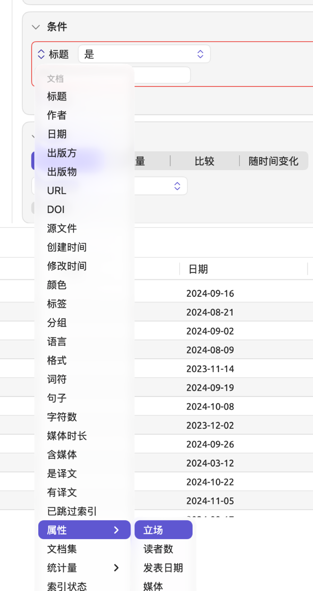
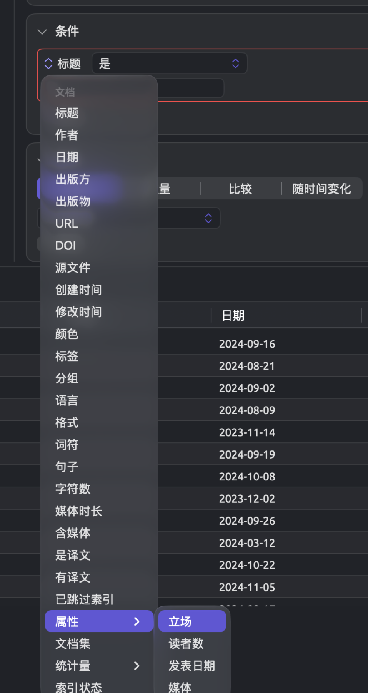
| 部分 | 字段 | 查找以下单位时提供 |
|---|---|---|
| 词 | 词、词元、词类、标记、依存、形态学、停用词、是词、是标点、句内位置、字母数、中心词词元、中心词词类、功能、词性、短语类别、否定词、在否定范围内、连接语、情态、拓扑场、助词 | 词 |
| 句子 | 句子文本、句中词数、句子编号、根词元、根词词类、被动 | 词、模式匹配、句子、短语、名词块、发现 |
| 段落 | 段落文本、段落编号 | 除备忘录、链接和对齐外的所有片段单位 |
| 片段 | 文本、长度（以字符计） | 所有片段单位 |
| 短语 | 短语标签、形式、宽度、短语功能、短语中心词 | 短语、名词块 |
| 发现 | 分析器、发现、注释 | 发现 |
| 编码实例 | 编码、编码属性、长度、创建时间、摘录、已编码备忘录 | 编码实例 |
| 备忘录 | 内容、附加到、关联编码、标签、创建时间、修改时间 | 备忘录 |
| 书签 | 颜色、评论、创建时间、修改时间 | 书签 |
| 链接 | 关系、评论、颜色、标签、创建时间、另一文档、端点 | 链接 |
| 话轮 | 说话人、开始、结束、时长 | 话轮 |
| 对齐 | 译文语言、原文文本、译文文本 | 对齐 |
| 文档 | 标题、作者、日期、出版方、出版物、URL、DOI、源文件、创建时间、修改时间、颜色、标签、分组、语言、格式、词符、句子、字符数、媒体时长、含媒体、是译文、有译文、已跳过索引、属性、文档集、统计量、索引状态、项目 | 文档和所有片段单位，在文档集、项目和所有项目中 |
| 编码 | 名称、路径、深度、上级、颜色、样式、适用范围、可编码、描述、标签、编码集、编码实例、已编码文档 | 编码 |
| 编码集 | 名称、编码 | 编码集 |
| 文档集 | 名称、种类、文档、颜色 | 文档集 |
| 分组 | 名称、文档 | 分组 |
| 属性 | 名称、类型、所属、描述、选项、已设置值 | 属性 |
| 标签 | 名称、使用次数、项目、文档、编码 | 标签 |
| 词典词条 | 词条、类别、词典、命中 | 词典词条 |
| 分析器 | 名称、语言、图例键 | 分析器 |
| 项目 | 名称、颜色、标签、文档 | 项目 |
词的各个字段来自索引。词性把词类中较细的类别归并为较大的类别，专有名词归入名词，助动词归入动词。如果需要进一步了解词性和词类，见第 11 章“语法检查器”。文档的情态、连接语、拓扑场（德语）和助词（中文）透镜标注，见第 6 章“透镜”中的说明。
比较方式与值
规则允许的比较方式取决于字段所含值的类型。
| 字段种类 | 示例 | 比较方式 |
|---|---|---|
| 文本 | 标题、词元、评论、媒体 | 是、不是、包含、不包含、匹配、为空、不为空 |
| 数字 | 词符、长度、读者数 | 是、不是、小于、最多为、大于、至少为、介于、为空、不为空 |
| 时长 | 媒体时长、开始、时长 | 与数字相同 |
| 日期 | 日期、创建时间、发表日期 | 是、早于、晚于、不早于、不晚于、介于、为空、不为空 |
| 是或否 | 被动、停用词、含媒体 | 为真、为假、为空 |
| 列表中的一个值 | 编码、词类、分组、说话人、颜色、立场 | 是以下任一、不是以下任何、为空、不为空 |
| 多个值 | 标签 | 包含以下任一、包含以下全部、不含以下任何、为空、不为空 |
| 语言和格式 | 语言、格式 | 是以下任一、不是以下任何 |
值根据各自的类型输入：
- 文本和数字值直接填入值栏。介于会显示两个栏。
- 日期值可以用日期选择器选择。选择器默认显示当天，但在你修改之前，这条规则不会生效。
- 时长值应按分和秒（
12:30）或按时、分、秒（1:05:00）输入。单独一个数字表示秒数。 - 列表项的值以复选框形式出现在点按值时打开的小面板中；勾选后，值会显示“行动派”或“怀疑派”等；无表示当前没有选中任何项。
LemmaLoom 比较文本值时不区分大小写。变音符号以及字符的全角与半角之分（Ａ 与 A）同样不影响比较。因此，如果用标题 包含 ２０２４（全角数字）进行搜索，会得到“2024 热浪报告”这样的结果。匹配要求与整个值相匹配，并允许使用通配符（* 代替一串字符，? 代替任意单个字符）。标题 匹配 ?型* 会得到“模型总是失准”和“转型谁来买单”。而标题 匹配 *不多了 会得到“时间不多了”，但不匹配“时间不多了 (英语)”，因为模式必须与整个标题值相匹配。
编码字段列出各个编码及其路径，例如“紧迫性 › 时间节点”。在文档集或项目中，只属于某个文档的编码会附上该文档的标题。编码规则正下方有一个包括子编码选项，默认是开启的，所以“情绪”包括它的子编码“恐惧”和“希望”。
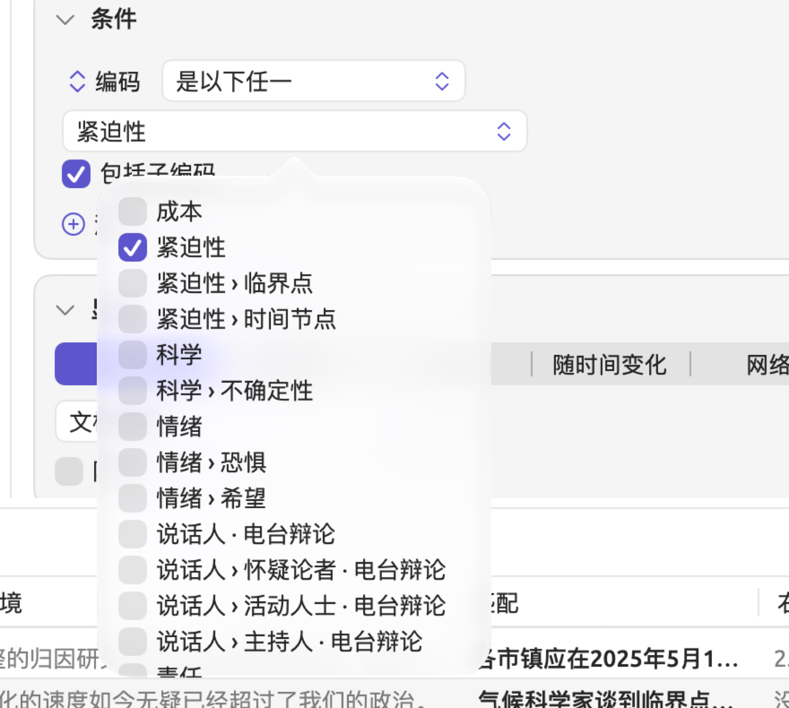
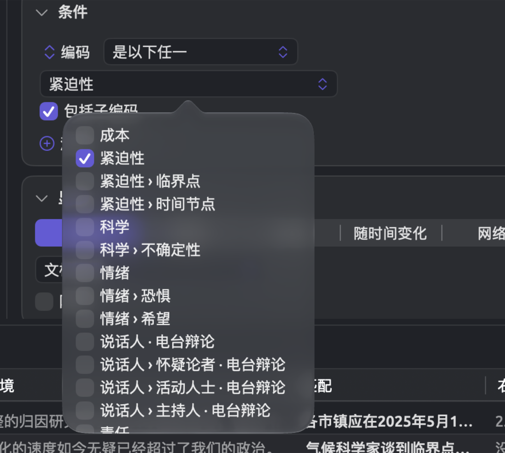
标记（词的语法标记，不是你自己添加的标签）列出范围内各语言所用的标记集。同样，依存列出依存关系集，短语标签列出短语标签集。范围中包含不止一种语言时，这三个字段中的条目会带有语言徽标，因为英语、德语和中文使用不同的标记集。
条件组
条件和条件组顶部的控件（全部、任一或无）决定如何处理满足其规则的命中。换句话说，这个控件决定条件或条件组保留的是满足其中所有规则的命中（全部）、满足其中任一规则的命中（任一），还是一条规则也不满足的命中（无）。
与普通条件相比，条件组的特别之处在于可以在且之中放进一个或。例如，假设你想在“气候辩论”项目中找出读者众多的文章里的“情绪”编码实例，以及怀疑派文章中的“情绪”编码实例，不论后者的读者数多少。可以在“气候辩论”中使用一个查找标注 · 编码实例的查询。这个查询中有一条规则编码 是以下任一 “情绪”，并勾选了包括子编码。这条规则下面是一个设为任一的条件组。这个条件组包含两项标准，即读者数 至少为 100,000，以及立场 是以下任一 “怀疑派”。条件保持为全部。查询文本用括号表示条件组：
查找 编码实例
条件 编码 是以下任一 "情绪" 且 ("读者数" 至少为 100000 或 "立场" 是以下任一 "怀疑派")
显示 列表
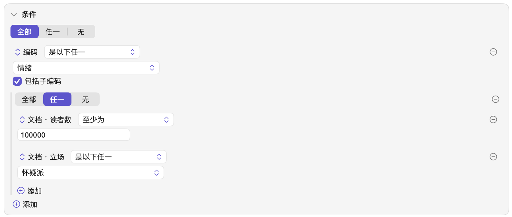
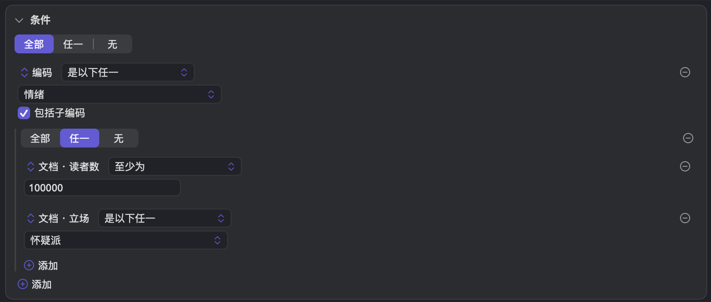
添加条件组：
- 在条件中点按添加，然后选取添加条件组。新条件组一开始设为任一，含有一条规则。
- 像设置其他规则一样设置这条规则。
- 要在条件组中添加更多规则，请点按条件组自己的添加按钮，然后选取添加规则。
规则的嵌套不能超过三层，不过添加菜单允许超出这个限度。条件组里有一个子条件组是可以的，但在这个子条件组里再嵌套一个条件组就算嵌套过深了。上下文行和“具有”行各算作两层。在条件本身中，这些行下面只能放规则。而在条件组中，这些行下面的规则就已经嵌套过深了。嵌套过深的规则会带有红色轮廓（嵌套过深），查询会等到它被删除后才运行。
冻结列表
冻结列表是存储在查询内部的一份词表。你可以通过操作菜单中的冻结值，从搭配词或关键词查询的结果创建冻结列表（见第 18 章“使用查询结果”）。类似某编码的片段也会创建冻结列表（见第 17 章“查询模式与发现”中的类似某编码的片段）。
冻结值会用一个新的、未存储的词查询替换现有查询。新查询只有一条规则，把查询计数所依据的字段（词元、词或词类）与列表中的词进行比较。新查询和冻结列表沿用被冻结查询的名称。最多可以存储 200 个词，每个词都带有它在结果中的得分。查询文本按名称显示冻结列表，例如 词元 是以下任一 "关键词：行动派"。
即使文档发生变化，这些列表中的词也不会改变。要查看行动派的关键词出现在怀疑派文章的哪些地方，请把冻结后的查询存储到项目中，然后在“怀疑派”文档集中打开它。
查看带冻结列表的查询的条件时，词元和词规则的值会显示为无。如果是词类规则，冻结列表会与可用的词类进行比对，每个词类会相应地显示为勾选或未勾选。勾选或取消勾选单个词类，会移除冻结列表，改用你的选择。要从查询中移除冻结列表，移除它所在的规则即可。
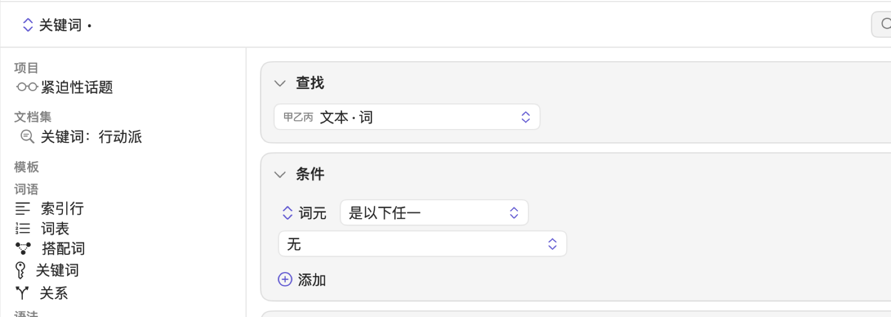
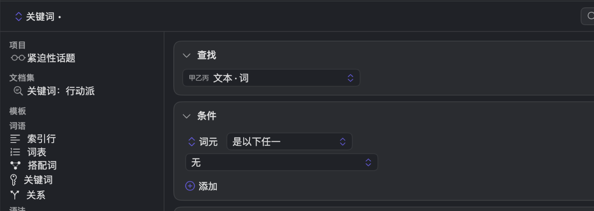
带冻结列表的查询为结果列表额外提供一种排序方式，即得分，它按片段所含的冻结词为片段排序。关于这个得分的更多信息，见第 17 章“查询模式与发现”。
匹配文本
查找词或字符有两种方法。在条件中使用添加文本时，你是在查询的规则中添加一个文本行，作为命中的要求。这样，命中的句子会包含你的某个词条。而如果在查找中使用文本 · 文本匹配，每一处匹配都会成为一个单独的命中。同样的文本行会出现在查找条件中。
文本行包含两个菜单。第一个菜单设定词条与什么元素匹配；第二个菜单（初始为词条）设定词条从哪里来。在菜单下方输入词条后，可以使用区分大小写和全词匹配这两个复选框。
比较的对象
| 第一个菜单 | 每个词条比较的对象 | 大小写 | 重音符号 |
|---|---|---|---|
| 词 | 每个词的书写形式 | 忽略，除非勾选了区分大小写 | 忽略，除非勾选了区分大小写 |
| 词形 | 每个词的词典形式 | 忽略 | 区分 |
| 词元 | 每个词的词典形式 | 忽略 | 忽略 |
| 文本 | 文本中的字符，不论出现在哪里 | 忽略，除非勾选了区分大小写 | 忽略 |
对于词，词元通常能得到最好的结果，因为搜索时会匹配一个词的所有屈折形式。如果你的分析需要确切知道出现的是哪种词形，词更合适，例如要单独找出 emergency 而不要 emergencies。词形与词元的作用完全相同，只是区分重音符号；因此，德语的 schon 和 schön 在词形中被视为不同的词，在词元中则不然。
这三个选项（词形、词和词元）都根据索引匹配完整的词。由几个词组成的词条，必须按顺序与相邻的词完全重合，中间不能间断，并且位于同一个句子中。匹配前会去掉连字符，因此搜索 carbon-neutral 既能找到 carbon-neutral，也能找到 carbon neutral。如果文档没有索引，这三者的作用都与选择文本相同。
文本匹配的是字面上的字符，而不像词形、词和词元那样根据索引匹配完整的词。勾选全词匹配后，只有当匹配内容前后紧邻的位置都不是字母或数字时，才算匹配。取消勾选它，就可以查找嵌在较长字符串中的词。全词匹配只对文本起作用。
使用词形和词元时，词条中的每个词都必须以词典形式输入；也就是说，要输入 it seem 而不是 it seems，因为 seems 的词典形式是 seem。或者改用词。
对于需要索引的单位（例如句子），条件中新添的文本行默认为词；对于其他单位（例如编码实例），则默认为文本。同样，文本匹配默认为文本。
查找编码或文档集时，文本行在匹配时不区分大小写和重音符号。它们在名称中查找任一普通词条，所以 临界 能匹配“临界点”。查找文档时，文本行扫描文档的文本。在资料库单位中，文本行只适用于这三种。
词条
在词条模式下，词条由你手动输入。
- 点按添加词条。
- 输入一个词条，然后按下 Return 键。要一次添加几个，请用逗号隔开，例如
危机, 紧急, 期限。 - 要移除一个词条，请点按它旁边的叉号。
这里的各个词条互为备选，命中只要满足其中至少一个即可。如果文本行中没有词条，LemmaLoom 会忽略这一行。
词典
在词典模式下，词条直接取自项目中的某个词典。例如，“气候辩论”有一个名为“模糊限制语”的词典，其中包含“近似语”和“缓和语”两个类别。下图展示的是在文本行中查询“缓和语”。
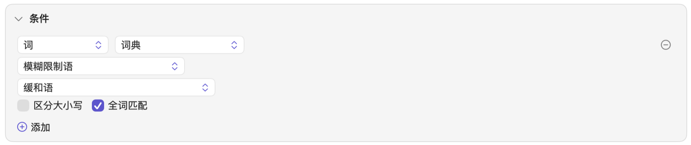
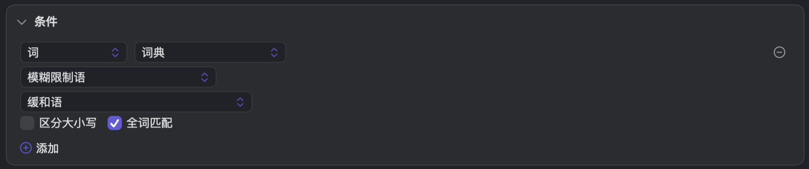
用词典查找：
- 在第二个菜单中选取词典。
- 从随之出现的菜单中选取词典。
- 如果只想搜索部分类别，请点按词典下方的控件，在打开的面板中勾选这些类别。什么都不勾选时，控件显示无，并使用所有类别。
每次运行查询时都会读取词典；因此，每当你向“模糊限制语”添加一个词条，下次运行时就能搜索到它。第一个菜单和两个复选框适用于词典中的所有词条。词典“模糊限制语”收录的是说话时实际使用的措辞，例如我觉得或差不多。因此，对于这个词典，词比词元更合适。关于词典透镜中的词典匹配，详见第 19 章“词典”。
通过词典查找文本匹配时，每个匹配实例还带有所匹配词条的词典类别。在显示条件的键行中，从显示字段的菜单中选择类别后，就会按类别统计匹配；按文档统计词典类别模板就是这样工作的。
正则表达式
正则表达式是由字符组成的字符串模式。如果你要找的内容变化较多，无法用词条列表来界定，例如拼写变体，正则表达式就很有用。例如，模式 排放量? 能找到排放和排放量，因为 ? 表示它前面的字符可有可无；它也会匹配排放者中的排放。同样，在英文文本中，\bheat[- ]?waves?\b 会找到 heat wave、heat-wave、heatwave 和 heat waves。在这个例子中，[- ] 匹配一个连字符或一个空格，\b 匹配词的边界。更多基本写法见第 4 章“导入资料”中的从索引中排除文本。
- 在第二个菜单中选取正则表达式。
- 在模式中输入模式。
不论第一个菜单怎样设置，正则表达式都会搜索文本中的所有字符。除非勾选了区分大小写，否则忽略大小写；但重音符号始终区分。词的边界必须通过在模式两端加上 \b 来指定。模式长度不能超过 1,000 个字符。如果 LemmaLoom 无法解读模式，模式会以红色边框标出，查询会等待你改正。结果区域会显示无效模式；将鼠标指针悬停在这一行上时，也会显示同样的内容。
中文文本
中文书写时词与词之间不用空格分隔，因此用词、词形或词元搜索中文词条时，词条的开头和结尾必须与建立索引时找出的词的边界相吻合。
词条可以由多个词组成。不论索引把科学识别为一个词，还是识别为科和学两个单独的词，词条科学都能匹配。科学家这样较长的词，对 LemmaLoom 来说是另一个词。词条中的空格会被忽略。
如果选择文本，LemmaLoom 会匹配中文词条的每一次出现，而不论这些字符位于其他词中的什么位置。全词匹配在这里不适用。如果不确定索引如何切分某个词，请使用文本。
上下文
上下文行根据周围的单位决定命中是保留还是去掉。上下文行是把编码与文本片段联系起来的常用手段；例如，它们可以找出你编码为“紧迫性”的片段中的词，或者仍未编码的句子。上下文行从左到右读起来像一个短语。因此，对于有 重叠 编码实例，LemmaLoom 会保留与任一编码实例重叠的命中。在这一行下面，你可以为其他单位添加规则。例如，第一个查询所用的上下文行带有规则编码 是以下任一 “紧迫性”。
每个新的上下文行初始为有、重叠和编码实例。
在第一个菜单中，你选择需要多少个其他单位：
- 有表示至少一个。
- 没有要求其他单位的数目为零。
- 至少要求数目不少于步进器中的数字，范围为 1 至 99。
- 至多允许数目不超过步进器中的数字，零也包括在内。
第二个菜单设定单位之间的关系，第三个菜单设定其他单位是什么，可以是任何片段单位。只有当查找使用模式匹配或文本匹配时，第三个菜单才会提供这一单位。更改单位会移除这一行下面的规则。
| 关系 | 命中在以下情况下计入 |
|---|---|
| 重叠 | 与另一个单位至少共有一个字符 |
| 位于其中 | 完全位于另一个单位之内 |
| 包含 | 完全包含另一个单位 |
| 范围相同 | 起止位置与另一个单位完全相同 |
| 与之同句 | 起点所在的句子，就是另一个单位起点所在的句子 |
| 与之同段 | 起点所在的段落，就是另一个单位起点所在的段落 |
| 与之同一话轮 | 与另一个单位一起位于同一个话轮之内 |
| 邻近 | 与另一个单位相距不超过所设的词数，前后皆可 |
| 之前 | 在另一个单位开始之前结束，两者之间的词不超过所设的数目 |
| 之后 | 在另一个单位结束之后开始，两者之间的词不超过所设的数目 |
| 链接到 | 与一个链接的一端重叠；这一行下面的规则检验该链接 |
| 译为 | 与一个已和译文配对的语段重叠；规则检验这一配对 |
邻近、之前和之后这三种关系都带有一个距离步进器，用于设定两个单位之间允许相隔的词数，初始为 3，范围为 0 至 50 个词。只有词计入距离。距离为 0 表示两个单位紧挨着，中间没有词。因此，相互重叠的单位之间的距离总是 0。邻近会跨越句子边界进行查找。
上下文总是来自命中本身以外的单位。
使用与之同句、邻近、之前和之后关系时，文档必须先建立索引。使用与之同一话轮关系时，文档还必须有转写文本。因此，使用这些关系的查询只会在这样的文档中找到命中。
查找句子的查询如果带有上下文行没有 重叠 编码实例，并且这一行下面没有规则，就会返回尚未编码的句子。
要在项目中找出与情绪相关的编码实例附近的孩子，可以用一个查找词的查询，其中带有规则词元 是 孩子。这里使用的上下文行是有 邻近 编码实例，距离设为 5 个词。这一行含有规则编码 是以下任一 “情绪”。查询文本为 词元 是 "孩子" 且 有 邻近 5 编码实例 (编码 是以下任一 "情绪")。
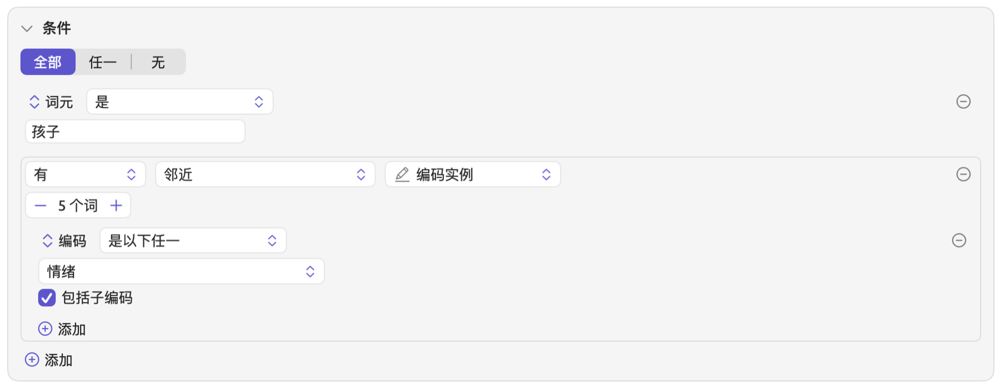
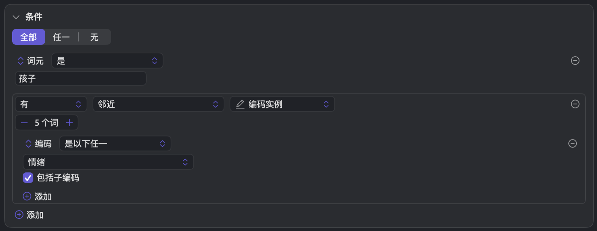
链接到考察的是链接，而不是这一行的单位。选取链接作为这一行的单位后，这一行下面的规则针对的是链接的字段，包括关系和评论。不带规则的有 链接到 链接会保留与某个链接的一个端点重叠的每个命中。
译为考察的是文档与其译文之间的关系。只有翻译了文档之后才会有这种关系（见第 9 章“译文与分屏浏览”）。要检验译文语言或译文文本，应选取对齐作为这一行的单位。例如，在“时间不多了”的查询分面中，查找句子的查询可以带有上下文行有 译为 对齐，规则为译文文本 包含 climate。它会找出英文译文中含有 climate 的那些中文句子。
“具有”条件
“具有”行统计属于命中的所有条目，例如一个文档的编码实例、一个文档集的文档。“具有”行的读法与上下文行相同，有助于掌握编码进度，包括跟踪哪些文档还没有编码。例如，具有 没有 编码实例这一行会找出完全没有编码过的文档。
以下单位提供添加“具有”条件：
| 查找的单位 | “具有”条件可以统计 |
|---|---|
| 文档 | 编码实例、备忘录、书签、链接、话轮、发现、对齐 |
| 编码 | 编码实例、备忘录 |
| 编码集 | 编码 |
| 文档集、分组、标签、项目 | 文档 |
数量菜单包括至少一个、没有、至少和至多，与上下文行中的大致相同。至少和至多的数值范围为 1 至 999。在这一行下面，规则用于限定统计哪些条目。例如，具有 没有 编码实例这一行如果带有规则编码 是以下任一 “成本”，就会返回不含“成本”编码实例的文档，不论它们是否有其他编码实例。
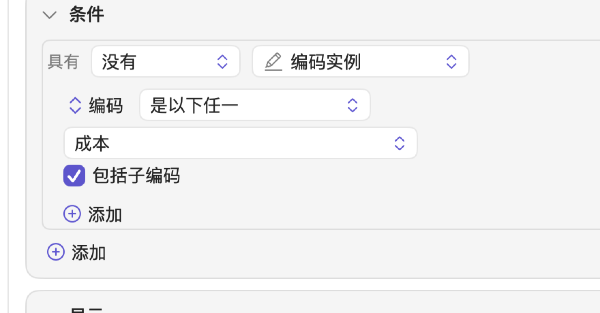
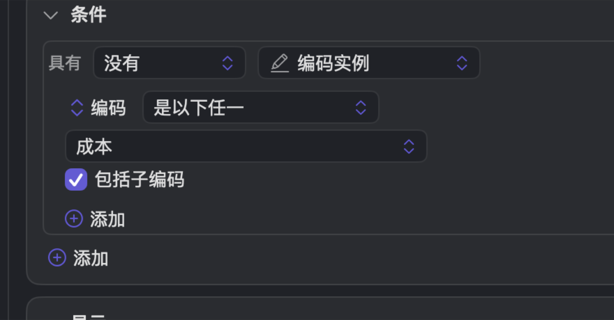
查找编码时则不同，只统计范围之内、并且带该编码本身的编码实例。在“怀疑派”文档集中，查找编码并设置具有 至少 5 编码实例的查询，会返回在怀疑派文档中使用了五次或更多次的编码。假设每个“紧迫性”片段都已编码为“时间节点”或“临界点”，具有 没有 编码实例会返回“紧迫性”。具有 备忘录统计的是项目各文档中与该编码关联的所有备忘录，包括范围之外的文档中的备忘录。
类别与着色依据
类别把命中分成带标签、带颜色的组。如果查询用作透镜，类别会用不同的颜色和样式标注各自的命中，并列在该透镜的图例中。列表会多出一个类别列，而在显示条件中使用分组依据 ▸ 类别，可以查看每个类别各有多少命中。
例如，在“气候辩论”项目的查询“紧迫性话题”中，你可以添加一个名为“危机”的类别，其中的文本行设为词元，查找危机和紧急；再添加一个名为“期限”的类别，其中的文本行设为词元，查找期限。把这个查询用作透镜时，它会用不同的颜色标注这两种紧迫性。
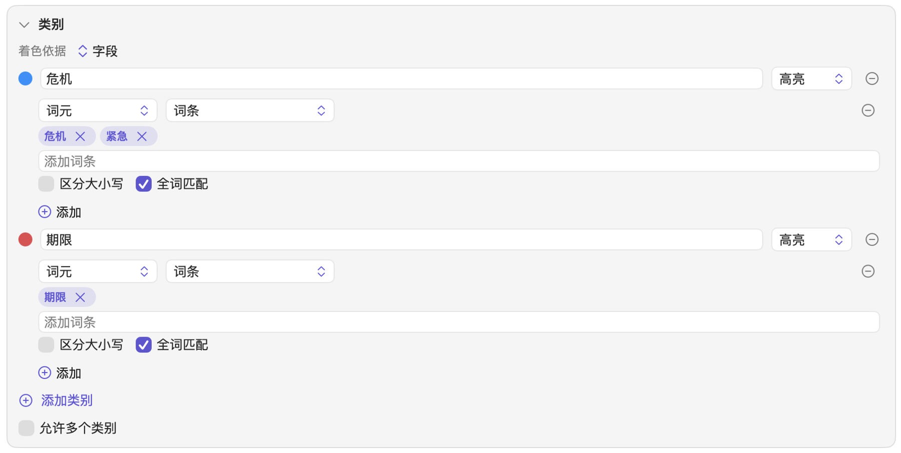
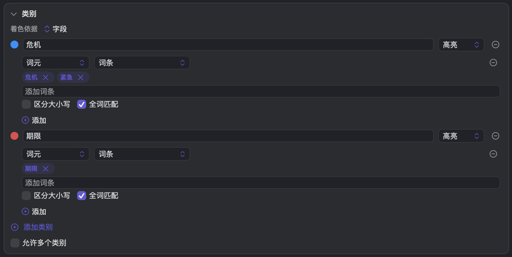
类别由规则构成。添加类别：
- 打开类别条件，点按添加类别。随即出现一行，名为“类别 1”。
- 点按彩色圆点，选取一种颜色。
- 把“类别 1”替换为你自己的名称。
- 在名称旁边的菜单中选取高亮或下划线。
- 在这一行下面添加规则，方法与条件相同。
至于类别的顺序，每个命中会从上往下取规则得到满足的第一个类别。勾选允许多个类别后，每个命中会得到适用于它的所有类别。这样，如果一个句子既提到危机又提到期限，它就同时属于“危机”和“期限”两个类别。如果创建了没有规则的类别，它不会得到任何命中。不满足任何类别规则的命中，其类别列为空。最后，LemmaLoom 会忽略不完整的规则；因此，如果一个类别唯一的规则还没有值，在填好这条规则之前，它会得到所有命中。
类别条件顶部的着色依据功能根据字段而不是规则来创建类别。在它旁边的菜单中选择一个字段，该字段的每个不同值都会成为一个有自己颜色的独立类别。对于编码实例，着色依据 编码的作用与此类似，它为每个不同的编码分配一种颜色。因此，如果想查看“电台辩论”中按类别区分的话轮，可以选择着色依据 说话人，把“主持人”“活动人士”和“怀疑论者”区分开。要移除着色依据字段，请点按它旁边的减号按钮。
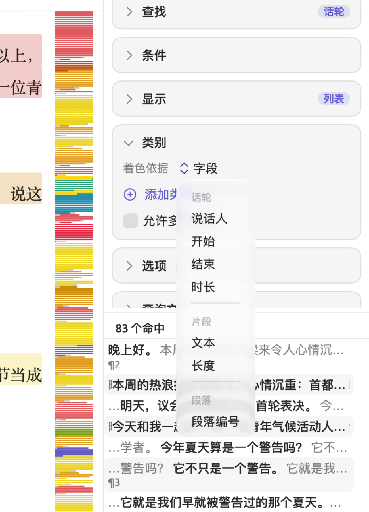
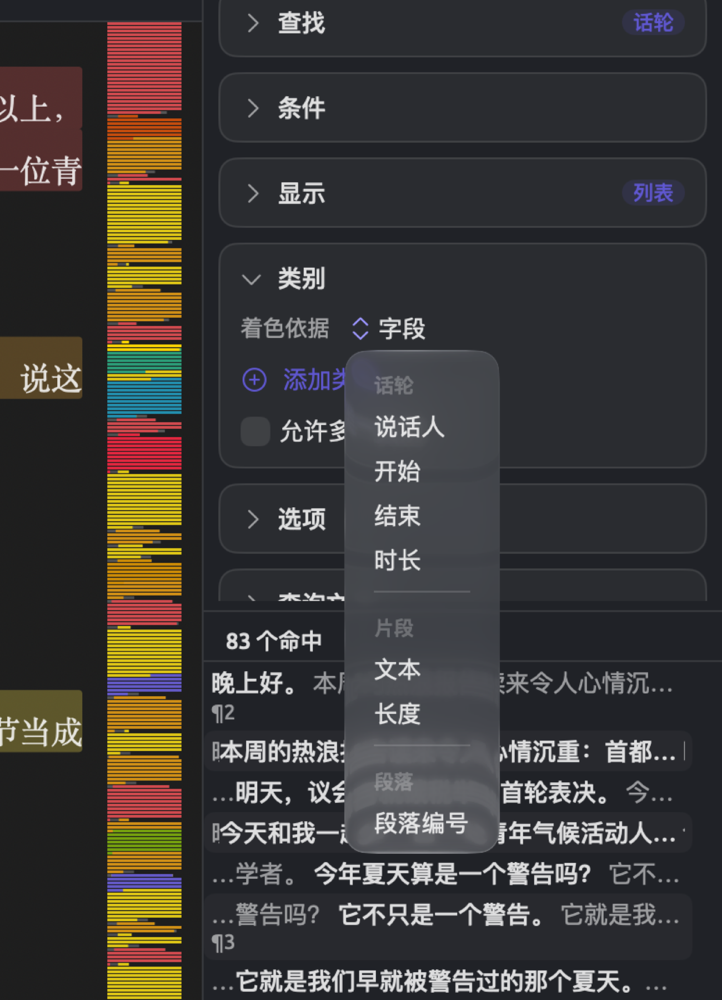
如果一个查询既有基于规则的类别，又有着色依据，命中会先从规则中取第一个适用的类别，只有当没有哪个规则类别适合它时，才从着色依据中取类别。勾选允许多个类别后，命中会得到所有适用的类别，包括着色依据的类别。
类别会依次自动分配蓝、红、绿、橙、紫、粉、靛蓝和黄色，样式为高亮；从第九个起，样式为下划线。每个查询最多可以有 16 个类别；达到这个数目后，添加类别按钮就会消失。透镜最多显示 16 项，因此最多有 16 个值可以获得着色依据颜色。
“显示”条件
显示条件返回哪种结果类型，取决于你的单位和范围，每种结果类型都有自己的一组选项。通常的做法是先用列表，检查查询找到的是否是你想要的内容，确认之后再改用数量或比较。
| 显示 | 得到的结果 | 适用于 | 控件 |
|---|---|---|---|
| 列表 | 每个命中一行 | 所有单位和范围 | 显示文档顺序的菜单、限制 |
| 数量 | 命中的数目，可以是总数，也可以按一两个分组依据键分别统计 | 所有单位和范围 | 分组依据、显示命中的菜单、限制 |
| 比较 | 按组统计的数目，附带一项统计检验 | 文档集、项目和所有项目 | 分组依据、显示命中的菜单、显示自动的菜单、限制 |
| 随时间变化 | 命中在一个文档中、在媒体时间上或在某个日期字段上的分布 | 片段单位和文档 | 分组依据、显示命中的菜单 |
| 搭配词 | 出现在命中附近的词 | 词、模式匹配、文本匹配 | 显示词元的菜单、窗口、显示 logDice 的菜单、最少 |
| 关键词 | 范围中用得比参照语料更多或更少的词 | 词，在文档集或项目中 | 显示项目其余部分的菜单（选择文档集后另有一个列出文档集的菜单）、显示词元的菜单、显示 LL ≥ 3.84 的菜单 |
| 网络 | 哪些值一起出现 | 片段单位 | 分组依据、显示重叠的菜单 |
列表默认按文档顺序排序。其他选项包括匹配、左语境、右语境、文档和频次，如果查询带有冻结列表，还有得分；资料库单位可以按名称或文档顺序排序。勾选限制复选框，结果只保留前 50 个命中，或者你用旁边步进器选定的其他数目。选项条件上还有一个单独的上限，两者中较小的那个起作用。
关于每种结果及其度量和检验，详见第 16 章“查询结果与统计”。
选项
- 条件顶部是显示原文的菜单，它决定文档集或项目层面的查询如何处理其中文档的现有译文。默认选中原文。原文只读取原文文档，译文只读取范围内各文档的译文，两者则同时考虑原文和译文。
- 已编码备忘录计为编码实例默认是勾选的。勾选时，附于片段并与某个编码关联的备忘录，在查找编码实例时或在关于编码实例的上下文行中，都会算作该编码的一个编码实例。编码实例的已编码备忘录字段会专门标出这些备忘录。不勾选时，只统计真正的编码实例。无论这个复选框如何设置，“具有”行都只统计编码实例。
- 上限 5,000 设定查询生成的任何列表中最多出现多少个命中。可以用所示的步进器以 1,000 为单位增减，最高为 200,000。显示条件中的限制只能把它调低。结果上方的命中计数器显示获得的所有命中的数目。所有计算、数量和比较都始终使用全部命中。
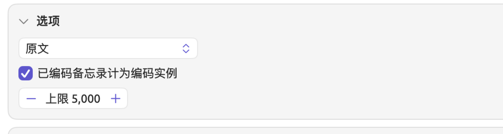
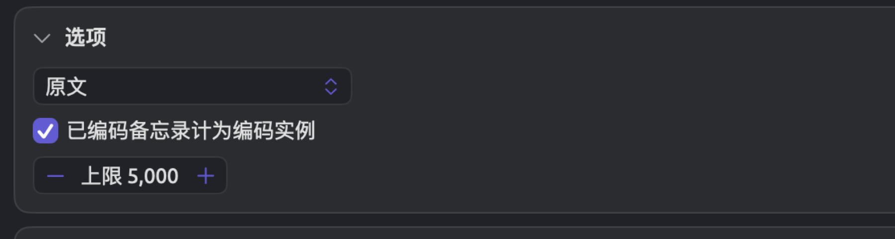
运行查询
文档中的查询，或者中等规模的文档集或项目中的查询，会在任何更改之后不久重新运行。LemmaLoom 会留意你编辑时的停顿，然后检查并重新运行查询。查询处理文档集或项目中的文档时，停止旁边的进度环会相应地逐渐填满。结果会陆续出现，不必等到最后一个文档处理完。
在文档集、项目和所有项目中，如果文档所含的词符（词和标点符号）少于约 300,000 个，查询会自行运行。完全不需要文本的查询也会自行运行，例如资料库 · 编码。关键词查询会把用来比较的文档也计入 300,000 这个阈值。如果查询超过这个阈值，每当发生更改，结果区域都会显示一个标有运行查询的按钮。点按它，或点按查询横栏中的三角形图标，或者选取编辑 ▸ 运行查询（⌘R）。大型查询所需的时间各不相同，取决于文档的大小和你电脑的硬件。
点按停止可以停止耗时较长的查询，结束其计算。编辑 ▸ 新建查询会清空构建器但保留单位，你可以从空的条件重新构建查询。
不满足运行查询的条件时，三角形不可用，结果区域会显示下列消息之一。出问题的规则周围会出现红色边框，将鼠标指针悬停在上面可以看到原因。不完整只出现在规则上，因为查询仍会运行。
| 消息 | 含义 | 是否运行 |
|---|---|---|
| 不完整 | 某条规则还没有值，或某个文本行没有词条。在你补全之前，它会被忽略 | 是 |
| 缺失 | 规则引用的编码、属性、词典、全部勾选的类别、分组、文档集、编码集、项目或文档已被删除 | 否 |
| 此处不可用 | 该字段不能在此范围中使用，例如文档查询分面中的文档字段 | 否 |
| 无效模式 | 正则表达式无法解读 | 否 |
| 模式过长 | 正则表达式超过 1,000 个字符 | 否 |
| 嵌套过深 | 某条规则的嵌套超过三层，例如位于条件组内某个上下文行之下（见条件组） | 否 |
| 节点过多 | 依存模式中的词太多 | 否 |
| 需要文档集或项目 | 在文档的查询分面中打开了一个显示比较或关键词的已存储查询 | 否 |
| 没有可比较的对象 | 关键词把范围与它自身进行比较 | 否 |
| 未选择文档集 | 关键词设为与某个文档集比较，但没有选择文档集 | 否 |
此处不可用消息通常出现在你把已存储的查询载入到并非为它构建的地方时。基于属性“立场”的查询可以在项目层面执行，但在文档的查询分面中会产生这条消息。
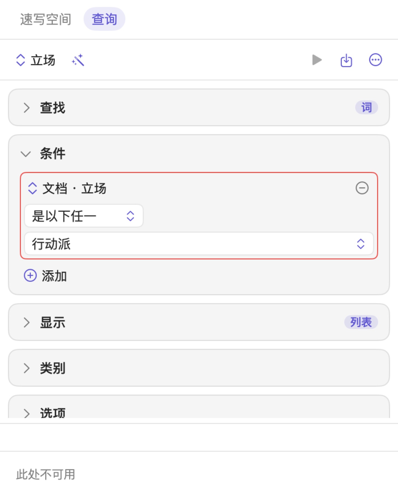
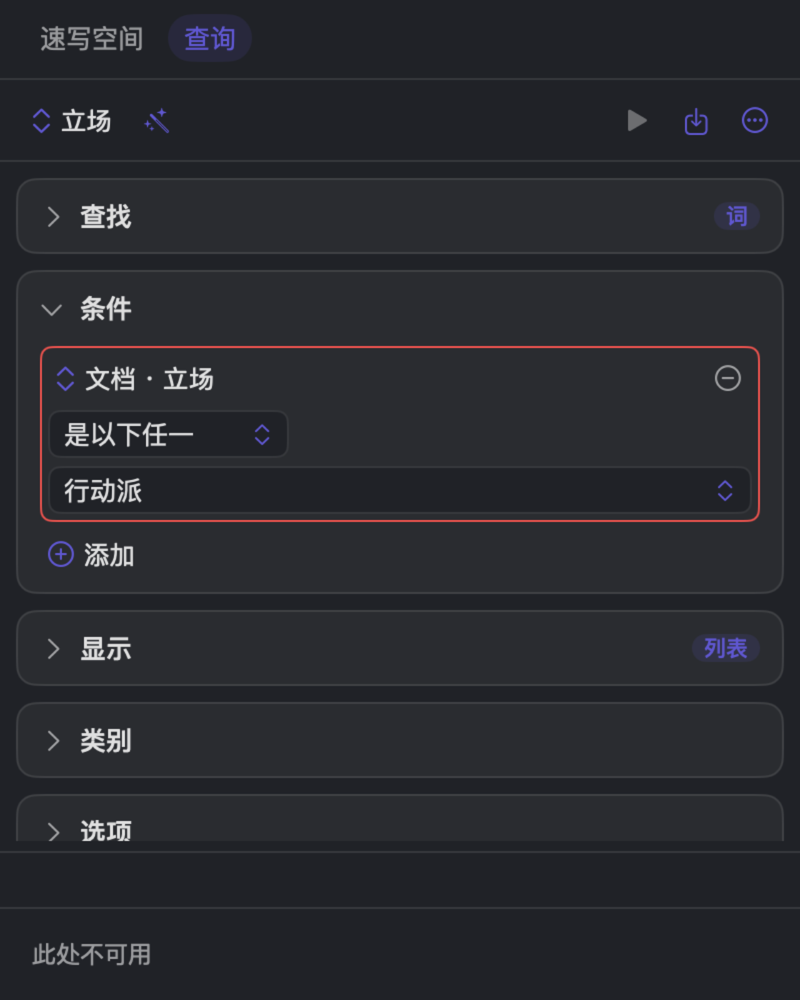
“查询文本”条件
查询文本条件以文字形式逐行写出整个查询，如上文第一个查询中“紧迫性话题”的示例所示。
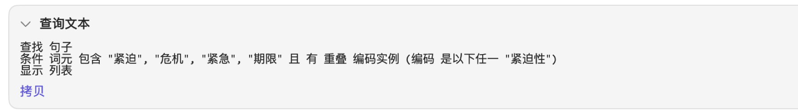
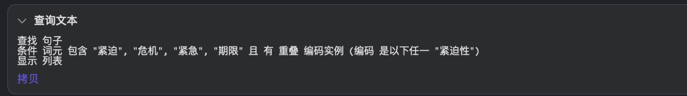
阅读查询文本，确认你的问题提得正确，尤其是带条件组的查询。全部、任一和无分别显示为且、或和非，非后面跟着括号。如果查询使用数量或比较，它的分组依据键和度量会加到最后一行，例如 显示 数量 按 词元 · 命中。
查询文本便于阅读，也可以拷贝粘贴到论文和研究日志等研究记录中；要更改查询，请更改各个条件。点按拷贝可以把查询文本放到剪贴板上，以便粘贴到其他应用程序中。导出的结果会保留查询文本（见第 16 章“查询结果与统计”中的导出结果）。
存储查询
已存储的查询会保留它的名称、各个条件以及它的所属位置，所属位置决定它在界面中的哪些地方出现。
| 可用范围 | 查询在哪里可用 |
|---|---|
| 文档 | 该文档的查询分面 |
| 文档集 | 文档集的查询视图、显示该文档集时的查询窗口，以及文档集中每个文档及其译文的查询分面 |
| 项目 | 项目的查询视图、它的各个文档集的查询视图、它的每个文档的查询分面，以及显示该项目或其某个文档集时的查询窗口 |
| 所有项目 | 任何地方 |
你打算在哪里重复使用查询，就应该把它存储在哪里。关于行动派文章的查询属于“行动派”文档集，而打算在某项研究的所有文档集和文档中使用的查询属于项目本身。如果你打算在不同研究之间重复使用查询，可以选择所有项目（见第 3 章“项目与文档”中的跨项目工作）。在“气候辩论”项目中，“行动派”文档集存储了一个名为“关键词：行动派”的查询，它来自快速入门。
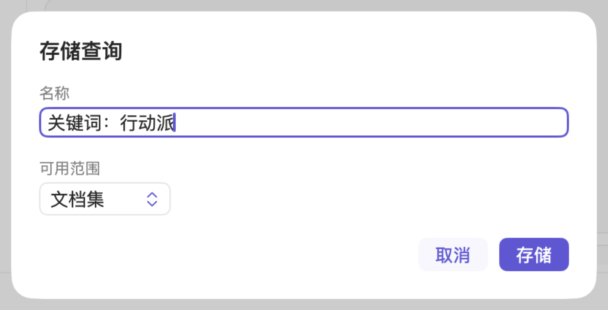
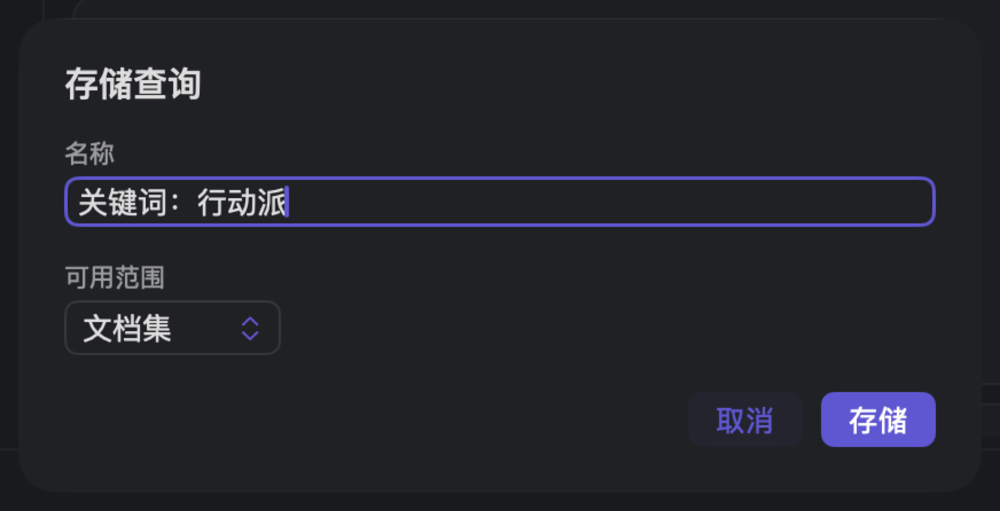
第一次存储查询：
- 打开存储菜单，选取存储为…。对于从未存储过的查询，存储的作用相同。
- 在存储查询对话框的名称中输入名称。
- 在可用范围中选择查询所属的位置。菜单先列出你当前所在的位置，然后是项目和所有项目，第一项已经替你选好。
- 点按存储。
此后，存储会把更改写入已存储的版本，名称后面的圆点随之消失。存储为…以另一个名称存储一份副本。要把查询的所属位置改到别处，也是用这个命令。对于已存储的查询，菜单中还有重命名…。
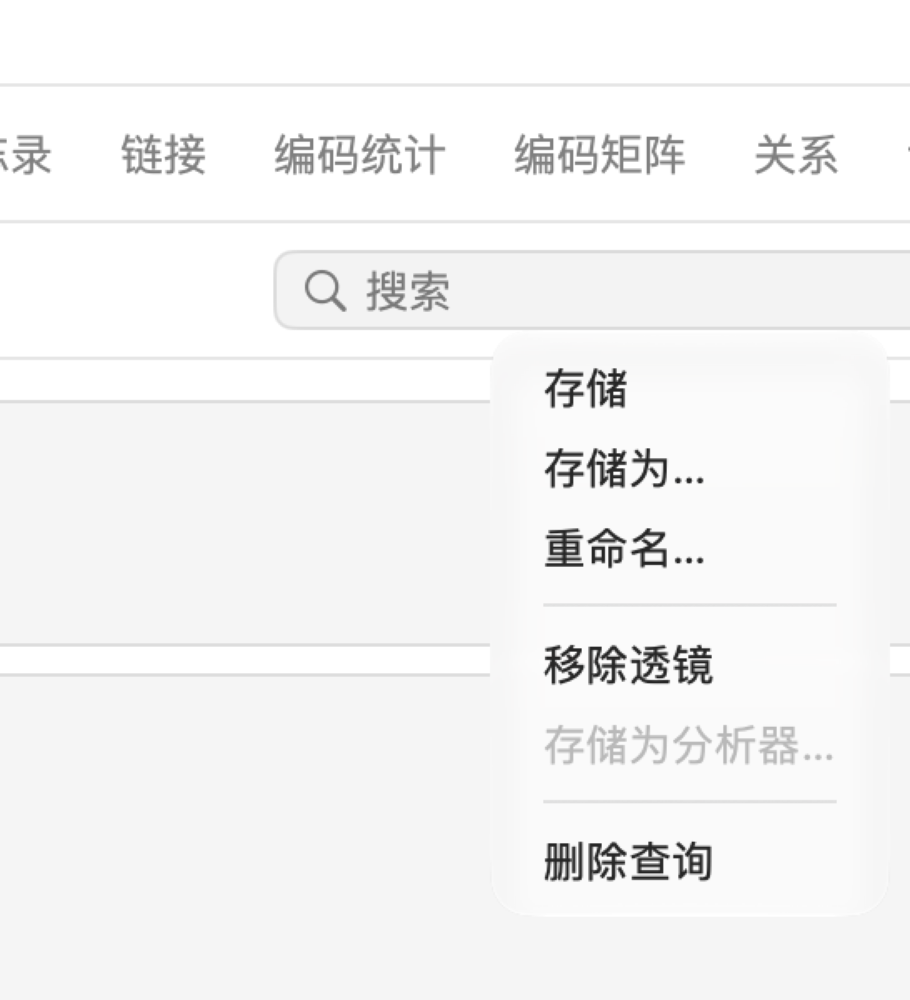
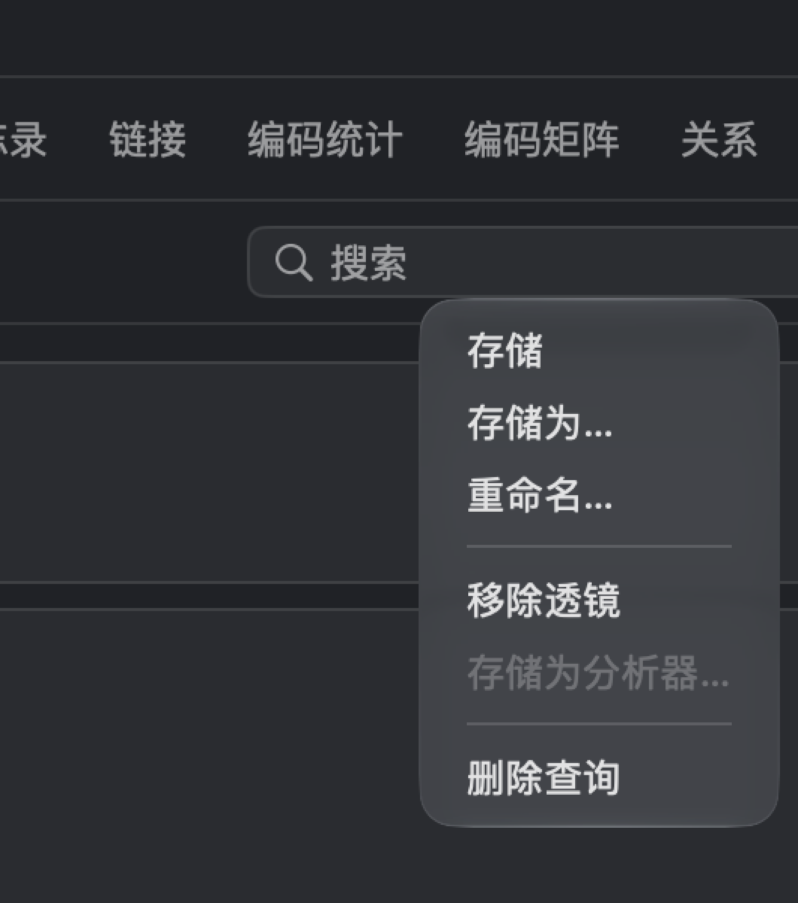
存储菜单还包括另外三个选项：
- 存储为透镜…把查询提升为阅读器透镜菜单中的一个透镜。新查询在变成透镜之前需要先存储，这时会通过存储为透镜对话框询问名称和可用范围；已存储的查询则会连同你的更改一起存储，并立即成为透镜。查询变成透镜后，这一选项显示为移除透镜。如果查询不符合成为透镜的条件，这一选项会变为不可用，将鼠标指针悬停在这一选项上可以看到原因。
- 存储为分析器…把查询转换为自定义分析器。
- 删除查询删除已存储的查询，留下一个空的构建器。
关于由查询生成的透镜和分析器如何工作，详见第 18 章“使用查询结果”。
要打开已存储的查询，可以从横栏左端的查询名称菜单中选取它，或者在查询视图或查询窗口的左栏中点按它。在左栏中，查询按所有项目、项目、文档集和文档分组。透镜的名称旁边有一个眼镜图标。在横栏的搜索栏中输入查询名称的一部分，就能在很长的查询列表中找到它。打开查询会立即运行它。要在左栏中删除查询，请右键点按该查询，然后选取删除查询。
存储、重命名、删除查询，以及把查询变成透镜或把透镜变回查询，这些步骤都会记录在撤销历史中。你可以用编辑 ▸ 撤销（⌘Z）撤销它们；菜单项会写明具体操作，例如撤销存储查询。关于撤销的更多信息，见第 23 章“撤销与重做”。
模板
模板提供预先设置好的查询，帮助回答基本的研究问题，包括生成索引行、生成词表，以及按属性查询编码实例。如果你从零开始构建查询时遇到困难，可以从模板入手，看看各个条件是怎样填写的，再相应地调整。
模板载入构建器时，带着它自己的名称，后面跟一个表示未存储的圆点，并会立即以默认状态运行。之后，你可以像对待其他查询一样修改和存储模板。
在查询视图或查询窗口中，模板列在左栏中已存储查询的下方，位于模板之下。在检查器的查询分面中，请打开横栏中的模板下拉菜单（魔杖）。列表分为词语、语法、编码、说话人与时间和文档与资料库几类。列表中只显示与当前范围相关的模板。在文档集和项目中，类似某编码的片段显示在模板下的最后，可以从范围中用到的编码里选择一个。
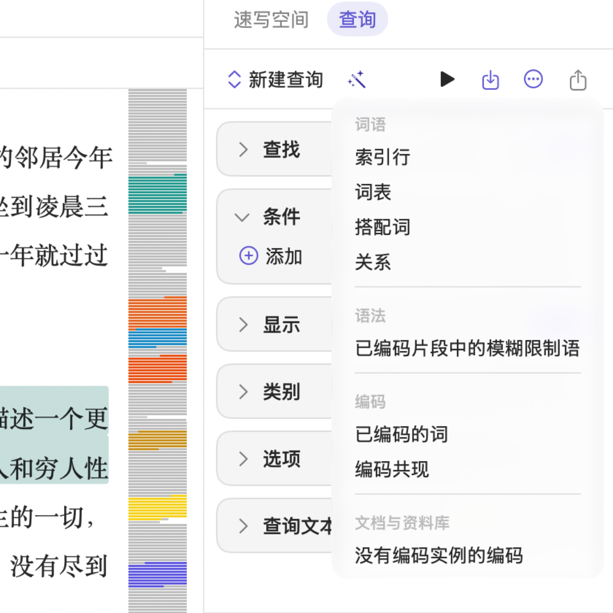
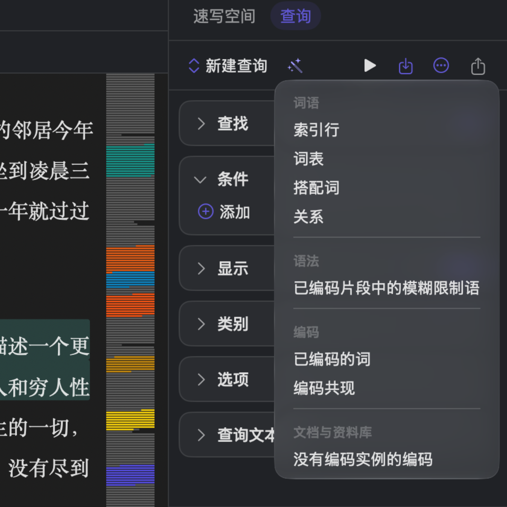
第 17 章“查询模式与发现”中的模板列出了所有可用的模板，包括每个模板的说明、它生成的查询以及适用的范围。同一章中的类似某编码的片段详细介绍了这个模板。